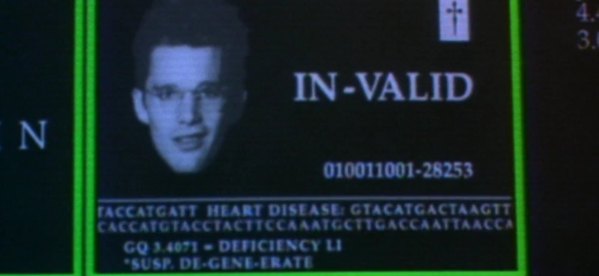

Determination and merit
Juan Camilo Espejo-Serna
Universidad de la Sabana
Write in chat a one-line summary of the plot of Gattaca.
(A good one :P).

The film considers several questions with philosophical interest. One is about free will and determination. Another about merit.
The film assumes a view about determination in order to make a point about merit.
Is Vince worthy of the being an astronaut?
Main claim: The film defends the view that even if we are determined to do something we 1) can fight it and 2) deserve to win.
If we really want to X, we can X. (If cannot X, is because you really didn't want it enough).
ANTONIO:
We were wondering if we should leave some
things to chance.
GENETICIST:
You want to give your child the best possible
start. Believe me, we have enough imperfection
built-in already. Your child doesn't need
any additional burdens. And keep in mind,
this child is still you, simply the best of you.
You could conceive naturally a thousand times
and never get such a result.
Vince is invalid and Anton is valid.
Does the film portray a fair society?
Is there merit in it?
Let us play a game of chance to think something about merit and luck.
- Get as many coins as you like
- Shake your coins and then count how many heads (the side that has numbers).
- Once you are ready, write in chat how many coins you used and how many heads you got.
- Game 1: The winner is the one who got the most coins; the amount of heads does not matter.
- Game 2: The winner is the one who got the most heads; the amount of coins does not matter.
- Game 3: The winner is the one who got the most heads with the least amount of coins.
Who wins?
Was it fair?
Was there merit?
Which game was fair?
Was there merit?
Unlike the other films we have seen, the scenario presented by this film might not present itself as unjust. Vince was unlucky; Anton was lucky. Neither cheated.
It seems that people in the film aimed at improving themselves. They aimed at getting better. Some people might be worse off but it is a matter of chance.
Is improving your chances always good?
Several people endorse a version of utilitarianism, with some variations. So we come again to the interesting-but-wrong theory and the kind of answers it would give.
Is improving your chances always good? Utilitarian: Absolutely (ish).
Utilitarians think that better is always good. If society is better off, it will be good.
Jim1: Jim, a botanist comes upon a public execution in a small town. A military captain has lined up twenty people. He explains to Jim that they have been chosen at random from the local population, which has recently been protesting against the government. The captain offers Jim a guest’s privilege. If Jim wishes, he can select one of them and shoot him; the other nineteen will then go free. Otherwise, the execution by the captain’s henchman, Pedro, will go ahead as planned. What should Jim do?
Jim2: Because the captain suspects him of involvement, Jim2 is asked to commit suicide to save the 20 people. What should Jim do?
Jim3: Jim3 has lived in the area for some time and has developed a deep and lasting personal relationship with one of the townspeople. The captain, knowing of this, sadistically offers Jim a choice: either he shoots that people and the other nineteen will go free, or the other nineteen will be shot and his friend will be freed. What should Jim do?
Is improving the conditions of the many always good?
Think about COVID-19 and the meassures taken.
Is "better" always good? Is it neutral?
Is neutrality and randomness fair?